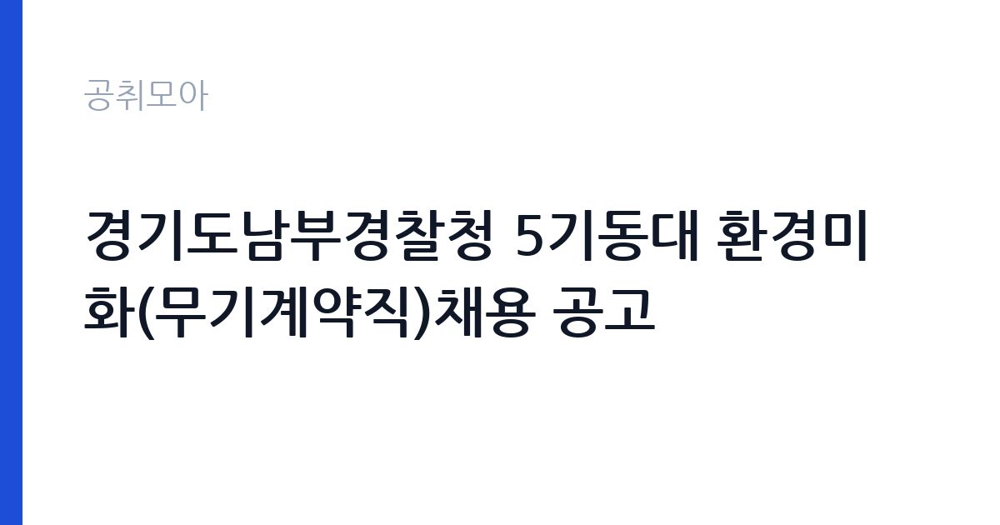

[국가기관] 경기도남부경찰청 5기동대 환경미화(무기계약직)채용 공고
경찰청 경기도남부경찰청 경기기동대 · 경기 · 마감 2026-10-22 (D-11) · 출처 나라일터

한눈에 보는 모집 조건
| 기관 | 경찰청 경기도남부경찰청 경기기동대 |
|---|---|
| 공고명 | 경기도남부경찰청 5기동대 환경미화(무기계약직)채용 공고 |
| 고용형태 | 공무직 |
| 근무지 | 경기 |
| 게시일 | 2026-10-12 |
| 마감일 | 2026-10-22 (D-11) |
지원자격, 이렇게 읽으세요
- 무기계약근로자 1명
- 접수 ~2026-10-22 마감
- 세부 조건은 원문 공고문 확인
환경미화 분야 무기계약근로자 1명을 선발하며, 공무직 채용이라 학력과 연령, 성별에 대한 제한이 없는 것이 일반적입니다. 관련 시설 미화나 청소 업무 경험이 있으면 서류와 면접에서 강점이 되지만, 필수 자격증이 요구되지 않는 경우가 많습니다. 경찰공무원법이 아닌 근로기준법과 공무직 관련 규정이 적용되며, 정확한 응시자격과 제출서류는 원문 공고문에서 확인하셔야 합니다.
이 공고의 포인트
이 공고의 가치는 무기계약직이라는 신분 그 자체입니다. 기간제와 달리 계약 갱신의 불안이 없고, 정년까지 근무할 수 있는 공무직이라 중장기 생활 설계가 가능합니다. 경찰청 소속 기관 근무라 복무 환경이 안정적이고, 5기동대라는 단일 근무지에서 일하므로 출퇴근과 업무 범위가 분명합니다. 채용 인원이 1명이라 면접에서 성실함과 장기근무 의지를 보여주는 것이 중요합니다.
전형은 어떻게 진행되나
공무직 채용은 서류전형과 면접시험의 순서로 진행되는 것이 일반적입니다. 서류전형에서 응시자격과 직무 적합성을 심사하고, 면접시험에서 인성과 직무 이해도, 조직 적응력을 평가합니다. 실기나 체력 평가가 포함될 수 있으니 원문 공고문의 전형 방법을 확인하십시오. 최종합격자는 신원조회와 채용신체검사를 거쳐 임용됩니다.
이런 분께 추천해요
- 청소와 미화, 시설관리 업무 경험이 있는 분입니다. 관련 경력이 곧바로 실무 투입으로 이어지는 자리입니다.
- 정년까지 안정적으로 일할 수 있는 공무직을 찾는 분입니다. 계약 불안 없이 한 직장에서 오래 일하고 싶은 분에게 맞습니다.
- 경기 남부권에서 출퇴근이 가능하고, 조직 생활에 성실하게 적응할 수 있는 분입니다.
지원 전 체크리스트
- 응시자격과 제출서류 목록을 원문 공고문에서 한 항목씩 대조하셨습니까.
- 경력증명서와 자격증 사본 등 가점과 우대 서류를 준비하셨습니까.
- 접수 마감일인 10월 22일 전에 접수를 마치실 수 있습니까.
- 근무지와 근무시간, 교대 여부를 원문에서 확인하셨습니까.
모집 일정과 제출 타이밍
공고 게시일은 2026년 10월 12일이며 접수 마감은 10월 22일입니다. 약 10일의 접수 기간이 있으나 증명서 발급 일정을 감안하면 초반 접수가 안전합니다. 서류 합격자 발표와 면접 일정은 원문 공고문과 해당 기관 홈페이지에서 확인하십시오.
직무 이해하기: 국가기관
5기동대 환경미화 공무직은 부대 청사와 숙소, 훈련장과 주변 시설의 청소와 위생 관리를 맡습니다. 기동대는 외근과 훈련이 잦은 조직이라 부재중 시설 관리와 행사 대비 청소가 중요하며, 분리수거와 방역 협조 같은 위생 행정도 함께 담당합니다. 정해진 구역과 시간을 책임지는 루틴 업무로, 성실함과 체력이 핵심 역량입니다.
자기소개서 작성 팁
자기소개서는 성실함과 장기근무 의지를 중심으로 쓰십시오. 미화와 시설관리 경험이 있다면 담당 구역과 기간을 구체적으로 적으시고, 조직 생활에서 동료와 협조한 경험을 사례로 제시하십시오. 경찰 조직의 일원으로서 보안 의식과 복무 태도를 갖추고 있음을 한 문단으로 보여주시면 좋습니다.
면접 준비 포인트
면접에서는 지원 동기와 직무 이해도, 장기근무 의사와 조직 적응력을 묻습니다. 미화 업무의 자부심과 성실함을 솔직하게 표현하시고, 체력 관리와 안전 수칙 준수에 대한 본인의 원칙을 말씀하시면 신뢰를 얻습니다. 예상 질문에 대한 답변을 미리 정리해 두십시오.
급여·근무조건 읽는 법
경찰청 소속 공무직의 보수는 기관별 공무직 보수지침에 따라 기본급과 각종 수당으로 구성됩니다. 정액급식비와 명절휴가비, 연가보상비와 시간외근무수당이 별도로 지급되는 구조가 일반적이며, 정확한 초임 보수와 호봉 산정 기준은 해당 공고문의 보수 조건에서 확인하셔야 합니다. 무기계약직은 퇴직금과 4대보험이 적용됩니다.
자주 묻는 질문
- 무기계약직과 기간제의 차이는 무엇입니까?
무기계약직은 계약기간의 정함이 없어 정년까지 근무할 수 있는 신분이고, 기간제는 계약기간이 정해져 있어 갱신 심사를 받습니다. 고용 안정성에서 차이가 크므로 공고문의 고용형태를 반드시 확인하십시오. - 정년이 보장됩니까?
공무직의 정년은 만 60세가 원칙입니다. 정년까지 근무할 수 있으나 복무규정 위반 등 징계 사유가 있으면 예외가 될 수 있습니다. - 근무지는 어디입니까?
경기도남부경찰청 5기동대 소속으로 근무하게 됩니다. 정확한 근무지와 통근 가능 여부는 원문 공고문과 임용 안내에서 확인하십시오.
함께 보면 좋은 공고
[국가기관] 산림항공본부 항공직(항공주사, 항공주사보) 경력경쟁채용시험 공고 — 마감 2026-10-23[국가기관] 충남대학교「의과대학 교육혁신 지원사업」 행정사무원(기간제 계약직 자체직원) 채용 공고 — 마감 2026-10-16[국가기관] 충남대학교 의과대학 「의학교육 활성화 지원사업」 행정사무원(기간제 계약직 자체직원) 채용 공고 — 마감 2026-10-16출처: 나라일터 공개정보를 바탕으로 공취모아가 정리한 안내글입니다. 모집 조건·일정은 변경될 수 있으니 지원 전 반드시 원문 공고문을 확인하세요. 본 글은 정보 제공용이며 합격을 보장하지 않습니다.